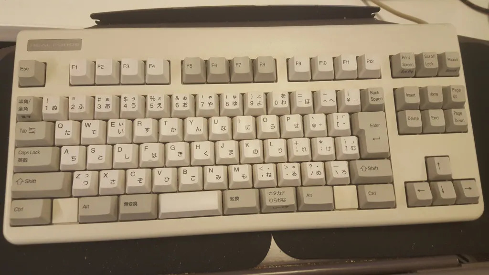
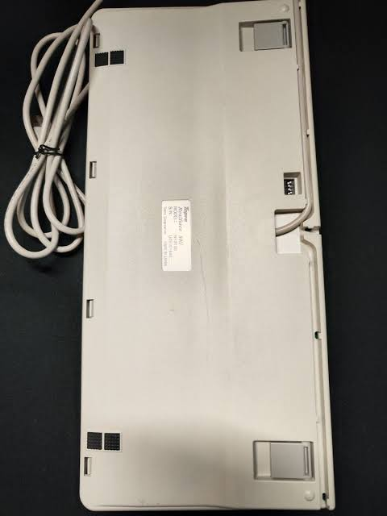

89-Key Realforce R1 Keyboard.
The Realforce NF0100 is a standard WKL/TKL 89-Key Realforce, and the successor to the ND0100. It was released around August of 2004, and has very minor deviations from it's predecessor.
Connector
The NF0100 uses USB to connect to the computer instead of PS/2.
Logo
The NF0100 abandons Realforce's early blue logo for either the intermediate silver "REAL-FORCE" logo or the final silver logo with a red A. The latter is considerably more common.
Dipswitches
The NF0100 features 4 dipswitches on the back side of the keyboard, to change aspects of the layout such as Ctrl swapped with Caps.
PCB and plate sticker images needed.
Courtesy of dilbertprogrammer.

Courtesy of Yahoo Autions Japan; better image needed.

https://online.plathome.co.jp/item/detail/11650550/%E6%9D%B1%E3%83%97%E3%83%AC/Realforce-89U/NF0100